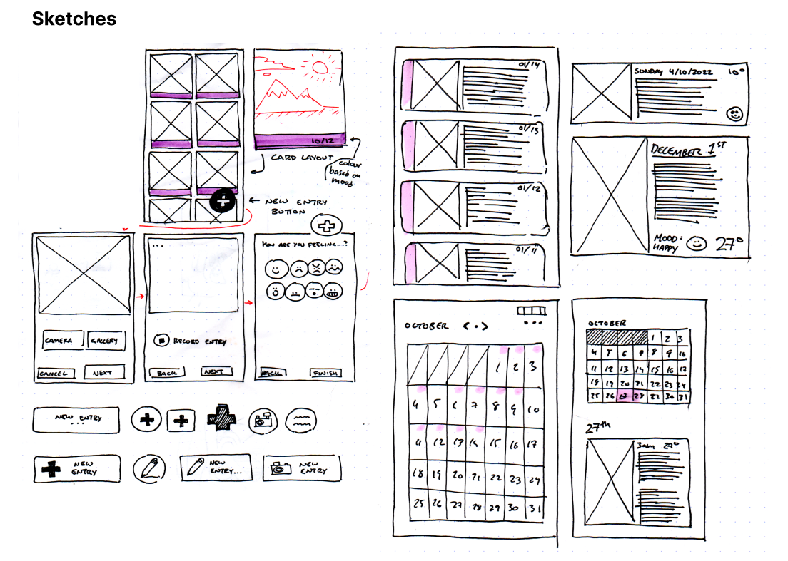
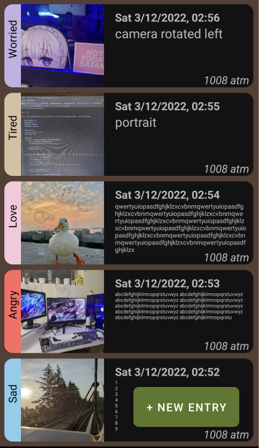

Sept 2022 - Dec 2022
For this school project, our team designed a journal entry mobile app that uses camera, SQLite databases, and uses hardware sensors.
Stephen Kerschbaumer, Michael Su
One of the co-creators of the app, I worked on the text entry, photo entry, login screen, themes, and helped design the journal entry page.
Sketching, Java, XML, SQLite
Android Studio
Design a mobile app that has 4 activity pages, stores data using shared preferences, and SQLite databases, functional with hardware sensors, and uses either camera or GPS. With polished UI UX experiences with graphics, menus, sound, persistence and responsiveness.
Our team decided to create a journal entry app with a text, photo, mood, and gallery activity pages. Storing data entry information with shared preferences and storing saved entries into an SQLite database.
As a team, we each sketched out some quick layout ideas for our project. We wanted to have a way to browse the gallery for images while also being able to read text.
In our first iteration, after testing and feedback from our Professor and TA, we found out that it was hard to balance out images with text in a mobile screen since their display size is small. We solved this by changing the text size to be responsive and creating a limit on the number of characters, which is where we got the name JotDown as we wanted users to quickly take a picture and jot down their thoughts.
In another iteration, we decided that images were too small for viewing and wanted users to view images and text in a more expanded view, and thus we created a popup view when users touch the gallery card. We also wanted users to have privacy since journals could sometimes contain personal or private information.
The biggest challenge I faced was inserting images into the SQL, I completed the camera and gallery image entry pretty early, but I had trouble sending the image to shared preferences and the SQL. First we tried to convert the image from URI to bitmap to a byte array and then save it to the SQL, but we figured out it was easier to save the image to a file path or grab the file path and then save it as a string into the SQL. Even after completing the saving file path to SQL, we had trouble with displaying the image in our gallery card view because we had a problem with accessing read permissions in our app. We had enabled the camera permission, but we did not have the file storage permission enabled. We didn't know that reading from the file storage was different from reading from the camera storage, which meant that the app could display camera photos but not the photos from the phone gallery.
One of the challenging things we have learned from this project was how to work on offline projects together as with code it is hard to work collaboratively in real time. We designated different features to work on and then at the end of the week we combined the project together creating an app that flowed together. From that we also learned how to comment and explain code to each other as we built our app because as the program got more complex the more messy the code got. At the end of the project, we acquired great teamwork skills, managing how to split work, and learned how to explain and integrate our ideas.